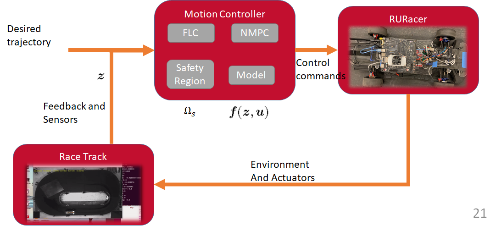
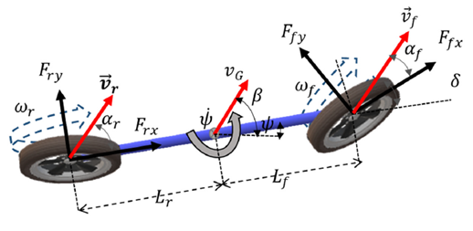
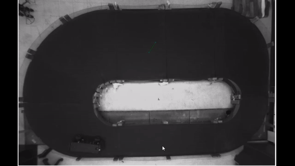

<h2> A scaled autonomous race car </h2>

<div>The RU Racer platform was created to experiment with motion planning and motion control algorithms for aggressive manuevers.</div>
<div> </div>


<!--  -->
<div> </div>
<iframe width="560" height="315" src="https://www.youtube.com/embed/Al0E5f69eNU" title="YouTube video player" frameborder="0" allow="accelerometer; autoplay; clipboard-write; encrypted-media; gyroscope; picture-in-picture" allowfullscreen></iframe>
